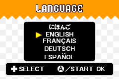

Sonic Advance (Europe) (En,Ja,Fr,De,Es)
Flash 512K Save Format Spec gbakit Built-In 💾 MultiBoot 🎮 4P Link
Cartridge Identity
- Game Code
ASOP(FamilyASO)- Header Title
SONIC ADVANC- Maker / Revision
6W/ rev0- ROM Size
- 8.0 MiB (8,388,608 B)
- Save Media
Flash 512K- SHA-256
a57c8c1a3e19a65baadc4a2fb4aa669e5ef462153ae9536634adbe6e03154b08- Engine / SDK Group
comm-016(22 families)
Screenshots


Link Cable & Multiplayer Communications
This title contains detected communication capabilities: 💾 MultiBoot 🎮 4P Link.
Detailed protocol specifications, SIO registers, Joybus commands, and MultiBoot sequences are documented in the Link & Multiplayer Reference.
- Multi-Player SIO (4P)
- 16-bit ring network · SIOCNT (
0x04000128) literals:0x006d74,0x007100,0x007180· SIODATA32/SIOMULTI0 (0x04000120) literals:0x00727c,0x0072e0,0x007350 - Single-Cart MultiBoot
- Single-Cartridge MultiBoot (Download Play) client/server handler · Thumb SWI 0x25 (
0xDF25):0x099aee,0x42034e,0x586f8e,0x5a424e
Battery Save Format Specification
Open Full Save Format SpecDownload Sample .sav (65,536 B)Download save-format.json
- Specification Coverage
- 14 mapped fields · 1 verified checksum(s) · Confidence: MEDIUM
- gbakit Built-In Support
- Built-in (ASOP)
- Emulator Verification
- Checksum enforced: Yes · Repaired save accepted: Yes
gbakit save verify ASOP save.sav
gbakit save decode ASOP save.sav
gbakit save fix ASOP damaged.sav -o repaired.savObserved Battery Save Layout
- Fill Byte & Active Size
0xFFfill · 0–4,086 / 65,536 B active (entropy 0.77 bits/B)- Active Offset Ranges
0x0–0x38B,0x38D–0x39B,0x39D–0x3AB,0x3AD–0x3BB,0x3BD–0x3CB,0x3CD–0x3DB,0x3DD–0x3EB,0x3ED–0x3FB, +3 more (11 total)- ASCII Magic / Headers
PIRO- Observed Variable Regions
- 4,086 bytes across 11 spans:
0x0–0x38B,0x38D–0x39B,0x39D–0x3AB,0x3AD–0x3BB,0x3BD–0x3CB,0x3CD–0x3DB,0x3DD–0x3EB,0x3ED–0x3FB, +3 more - Candidate Checksum/Counter Spans
- None
Text, Fonts & Scene Data
- Primary Text Encoding
- 16-bit / UTF-16LE text (
30ASCII strings ·8Shift-JIS runs) - Font & VWF Indicators
- VWF Width Table 1bpp Font · BIOS SWIs: BitUnPack
0x10:7· LZ770x11/12:3· Huffman0x13:0· RLE0x14/15:5 - Scene & Packaging
9ROM pointer tables (≥32 entries,4≥200) ·2relativeu32TOCs ·502OAM metasprite hits
Hardware MMIO Subsystems
ppu_display0x8000980save_bus_sram_flash0x8098f4c,0x80992ac,0x80993cc,0x8099540
Regional Variants & Revisions (Family ASO)
- Sonic Advance (Japan) (En,Ja) (
ASOJ, 8 MiB) - Sonic Advance (Japan) (En,Ja) (Rev 1) (
ASOJ, 8 MiB) - Sonic Advance (Japan) (En,Ja) (Rev 1) (Virtual Console) (
ASOJ, 8 MiB) - Sonic Advance (USA) (En,Ja) (
ASOE, 8 MiB) - Sonic Advance (USA) (En,Ja) (Beta) (2001-10-31) (
ASOE, 8 MiB)